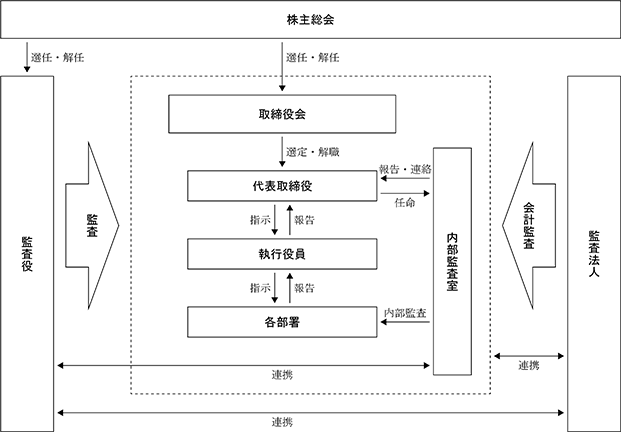

(注) 2024年４月25日開催の定時株主総会において定款の一部変更が行われ、発行可能株式総数は同日より20,280,000株増加し、51,320,000株となっております。
(注)１．当事業年度の末日後、2024年３月31日までの間に新株予約権の一部行使により、発行済株式の総数が240,000株増加しております。
２．提出日現在発行数には、2024年４月１日からこの有価証券報告書提出日までの新株予約権の行使により発行された株式数は、含まれておりません。
該当事項はありません。
該当事項はありません。
③ 【その他の新株予約権等の状況】
当事業年度の末日におけるその他の新株予約権等の状況は次のとおりであります。
第２回新株予約権(行使価額修正条項付)
※ 当事業年度の末日(2024年１月31日)における内容を記載しております。提出日の前月末現在(2024年３月31日)において、これらの事項に変更はありません。なお、2023年12月15日開催の取締役会決議により行使価額を修正し下限行使価額の158円といたしました。
(注) １．本新株予約権は、行使価額修正条項付新株予約権付社債券等であります。当該行使価額修正条項付新株予約権付社債等の特質は以下のとおりであります。
(1) 本新株予約権の目的となる株式の総数は4,800,000株、割当株式数は10,000株で確定しており、株価の上昇又は下落により行使価額が修正されても変化しない（但し、(注)２のとおり、割当株式数は、調整されることがある。）。なお、行使価額が修正された場合、本新株予約権による資金調達額は増加又は減少する。
(2) 本新株予約権の行使価額の修正基準：当社は、本新株予約権の割当日の６ヵ月後の応当日を経過した日以降、当社取締役会決議により行使価額の修正を行うことができる。行使価額修正決議がなされた場合、行使価額は、当該行使価額修正決議日の翌取引日以降、当該行使価額修正決議日の直前取引日の取引所における当社普通株式の普通取引の終値（同日に終値がない場合には、その直前の終値）の90％に相当する金額の１円未満の端数を切り上げた金額に修正される。但し、修正後の行使価額が下限行使価額を下回ることはない。なお、当社は、行使価額修正決議により行使価額の修正を行った場合、速やかにその旨を本新株予約権者に通知するものとする。
(3) 行使価額の修正頻度：本項第(2)号の条件に該当する都度、修正される。但し、行使価額の修正後の新たな修正は、直前の行使価額修正決議日の６ヵ月後の応当日を経過しなければ行うことができない。
(4) 行使価額の下限：本新株予約権の「下限行使価額」は当初158円（発行決議日の直前取引日の取引所における当社普通株式の普通取引終値の50％に相当する金額の１円未満の端数を切り上げた金額）とする。但し、(注)５による調整を受けることがある。
(5) 割当株式数の上限：本新株予約権の目的となる株式の総数は4,800,000株、割当株式数は10,000株で確定している。
(6) 本新株予約権が全て行使された場合の資金調達額の下限（下限行使価額にて本新株予約権がすべて行使された場合の資金調達額）：766,320,000円（但し、本新株予約権は行使されない可能性がある。）
(7) 本新株予約権には、当社の決定により本新株予約権の全部の取得を可能とする条項が設けられている（詳細は、(注)７を参照。）。
２．新株予約権の目的である株式の種類及び数
(1) 本新株予約権の目的である株式の種類及び総数は、当社普通株式4,800,000株とする。（本新株予約権１個当たりの目的たる株式の数（以下「割当株式数」という。）は10,000株とする。）但し、本項第(2)号及び第(4)号により割当株式数が調整される場合には、本新株予約権の目的である株式の総数は調整後割当株式数に応じて調整されるものとする。
(2) 当社が(注)５の規定に従って行使価額の調整を行う場合には、割当株式数は次の算式により調整される。但し、調整の結果生じる１株未満の端数は切り捨てる。なお、かかる算式における調整前行使価額及び調整後行使価額は、(注)５に定める調整前行使価額及び調整後行使価額とする。
(3) 調整後割当株式数の適用日は、当該調整事由に係る(注)５第(2)号及び第(5)号による行使価額の調整に関し、各号に定める調整後行使価額を適用する日と同日とする。
(4) 割当株式数の調整を行うときは、当社は、調整後の割当株式数の運用開始日の前日までに、本新株予約権者に対し、かかる調整を行う旨及びその事由、調整前割当株式数、調整後割当株式数並びにその適用開始日その他必要な事項を書面で通知する。但し、(注)５第(2)号⑤に定める場合その他適用開始日の前日までに上記通知を行うことができない場合には、適用開始日以降速やかにこれを行う。
３．本新株予約権の行使に際して出資される財産及びその価額の算定方法
(1) 各本新株予約権の行使に際して出資される財産は金銭とし、その価額は、行使価額に割当株式数を乗じた額とする。
(2) 本新株予約権の行使に際して出資される当社普通株式１株当たりの財産の額（以下「行使価額」という。）は、284円とする。但し、(注)４及び(注)５に定めるところに従い、修正及び調整されるものとする。
４．行使価額の修正
(1) 当社は、原則として、本新株予約権の割当日から６ヶ月を経過した日の翌日以降に開催される当社取締役会の決議により行使価額の修正を行うことができるものとする。本号に基づき行使価額の修正が決議された場合、当社は、速やかにその旨を本新株予約権者に通知するものとし、行使価額は、当該通知が行われた日の翌取引日以降、当該決議が行われた日の直前取引日の取引所における当社普通株式の普通取引の終値（同日に終値がない場合には、その直前の終値）の90％に相当する金額の１円未満の端数を切り上げた金額に修正される。なお、行使価額の修正後の新たな修正は、直前の行使価額修正から６ヶ月以上経過している場合にのみ行うことができるものとし、当該期間を経過していない場合には新たな行使価額修正をすることができないものとする。
(2) 前号にかかわらず、前号に基づく修正後の行使価額が158円（以下「下限行使価額」という。）を下回ることとなる場合には、行使価額は下限行使価額とする。
５．行使価額の調整
(1) 当社は、本新株予約権の割当日後、本項第(2)号に掲げる各事由により当社の発行済普通株式数に変更を生じる場合又は変更を生じる可能性がある場合には、次に定める算式（以下「行使価額調整式」という。）をもって行使価額を調整する。
(2) 行使価額調整式により行使価額の調整を行う場合及び調整後の行使価額の適用時期については、次に定めるところによる。
① 本項第(4)号②に定める時価を下回る払込金額をもって当社普通株式を新たに発行し、又は当社の保有する当社普通株式を処分する場合（無償割当てによる場合を含む。）（但し、新株予約権（新株予約権付社債に付されたものを含む。）の行使、取得請求権付株式又は取得条項付株式の取得、その他当社普通株式の交付を請求できる権利の行使によって当社普通株式を交付する場合、及び会社分割、株式交換又は合併により当社普通株式を交付する場合を除く。）、調整後の行使価額は、払込期日（募集に際して払込期間を定めた場合はその最終日とし、無償割当ての場合はその効力発生日とする。）以降、又はかかる発行もしくは処分につき株主割当てを受ける権利を与えるための基準日がある場合はその日の翌日以降これを適用する。
② 株式の分割により普通株式を発行する場合、調整後の行使価額は、株式分割のための基準日の翌日以降これを適用する。
③ 本項第(4)号②に定める時価を下回る払込金額をもって当社普通株式を交付する定めのある取得請求権付株式又は本項第(4)号②に定める時価を下回る払込金額をもって当社普通株式の交付を請求できる新株予約権（新株予約権付社債に付されたものを含む。）を発行又は付与する場合（但し、当社又はその関係会社の取締役その他の役員又は使用人に新株予約権を割り当てる場合を除く。）、調整後の行使価額は、取得請求権付株式の全部に係る取得請求権又は新株予約権の全部が当初の条件で行使されたものとみなして行使価額調整式を適用して算出するものとし、払込期日（新株予約権の場合は割当日）以降又は（無償割当ての場合は）効力発生日以降これを適用する。但し、株主に割当てを受ける権利を与えるための基準日がある場合には、その日の翌日以降これを適用する。
④ 当社の発行した取得条項付株式又は取得条項付新株予約権（新株予約権付社債に付されたものを含む。）の取得と引換えに本項第(4)号②に定める時価を下回る価額をもって当社普通株式を交付する場合、調整後の行使価額は、取得日の翌日以降これを適用する。
⑤ 本号①乃至③の場合において、基準日が設定され、且つ、効力の発生が当該基準日以降の株主総会、取締役会その他当社の機関の承認を条件としているときには、本号①乃至③にかかわらず、調整後の行使価額は、当該承認があった日の翌日以降これを適用する。この場合において、当該基準日の翌日から当該承認があった日までに本新株予約権の行使請求をした新株予約権者に対しては、次の算出方法により、当社普通株式を追加的に交付する。
この場合、１株未満の端数が生じたときはこれを切り捨てるものとする。
(3) 行使価額調整式により算出された調整後の行使価額と調整前の行使価額の差が１円未満にとどまる場合は、行使価額の調整は行わない。但し、その後、行使価額の調整を必要とする事由が発生し、行使価額を調整する場合には、行使価額調整式中の調整前行使価額に代えて調整前行使価額からこの差額を引いた額を使用する。
(4) その他
① 行使価額調整式の計算については、円位未満小数第２位まで算出し、小数第２位を四捨五入する。
② 行使価額調整式で使用する時価は、調整後の行使価額が初めて適用される日（但し、本項第(2)号⑤の場合は基準日）に先立つ45取引日目に始まる30取引日の株式会社東京証券取引所グロース市場における当社普通株式の普通取引の終値の平均値（終値のない日数を除く。）とする。この場合、平均値の計算は、円位未満小数第２位まで算出し、小数第２位を四捨五入する。
③ 行使価額調整式で使用する既発行株式数は、株主に割当てを受ける権利を与えるための基準日がある場合はその日、また、かかる基準日がない場合は、調整後の行使価額を初めて適用する日の１ヶ月前の日における当社の発行済普通株式の総数から、当該日において当社の有する当社普通株式を控除した数とする。また本項第(2)号⑤の場合には、行使価額調整式で使用する新発行・処分株式数は、基準日において当社が有する当社普通株式に割り当てられる当社の普通株式数を含まないものとする。
(5) 本項第(2)号の行使価額の調整を必要とする場合以外にも、次に掲げる場合には、当社は、本新株予約権者と協議のうえ、その承認を得て、必要な行使価額の調整を行う。
① 株式の併合、資本金の額の減少、会社分割、株式交換又は合併のために行使価額の調整を必要とするとき。
② その他当社の普通株式数の変更又は変更の可能性が生じる事由の発生により行使価額の調整を必要とするとき。
③ 行使価額を調整すべき複数の事由が相接して発生し、一方の事由に基づく調整後の行使価額の算出にあたり使用すべき時価につき、他方の事由による影響を考慮する必要があるとき。
(6) 行使価額の調整を行うときは、当社は、調整後の行使価額の適用開始日の前日までに、本新株予約権者に対し、かかる調整を行う旨及びその事由、調整前の行使価額、調整後の行使価額並びにその適用開始日その他必要な事項を書面で通知する。但し、本項第(2)号⑤に定める場合その他適用開始日の前日までに上記通知を行うことができない場合には、適用開始日以降速やかにこれを行う。
６．本新株予約権の行使期間
2021年４月29日から2024年４月28日の期間とする。但し、(注)７に従い当社が本新株予約権の全部又は一部を取得する場合、当社が取得する本新株予約権については、取得日の前日までとする。
７．本新株予約権の取得
当社は、本新株予約権の取得が必要と当社取締役会が決議した場合は、本新株予約権の払込期日の１年以降、会社法第273条及び第274条の規定に従って、当社取締役会が定める取得日の２週間前までに通知したうえで、本新株予約権１個当たり16,500円の価額で、本新株予約権者の保有する本新株予約権の全部又は一部を取得することができる。一部取得をする場合には、抽選その他の合理的な方法により行うものとする。
８．組織再編行為に伴う新株予約権の交付に関する事項
当社が吸収合併消滅会社となる吸収合併、新設合併消滅会社となる新設合併、吸収分割会社となる吸収分割、新設分割会社となる新設分割、株式交換完全子会社となる株式交換、又は株式移転完全子会社となる株式移転（以下「組織再編行為」と総称する。）を行う場合は、当該組織再編行為の効力発生日の直前において残存する本新株予約権に代わり、それぞれ吸収合併存続会社、新設合併設立会社、吸収分割承継会社、新設分割設立会社、株式交換完全親会社又は株式移転設立完全親会社（以下「再編当事会社」と総称する。）は以下の条件に基づき本新株予約権に係る新株予約権者に新たに新株予約権を交付するものとする。
(1) 新たに交付される新株予約権の数
新株予約権者が有する本新株予約権の数をもとに、組織再編行為の条件等を勘案して合理的に調整する。調整後の１個未満の端数は切り捨てる。
(2) 新たに交付される新株予約権の目的たる株式の種類
再編当事会社の同種の株式
(3) 新たに交付される新株予約権の目的たる株式の数の算定方法
組織再編行為の条件等を勘案して合理的に調整する。調整後の１株未満の端数は切り上げる。
(4) 新たに交付される新株予約権の行使に際して出資される財産の価額
組織再編行為の条件等を勘案して合理的に調整する。調整後の１円未満の端数は切り上げる。
(5) 新たに交付される新株予約権に係る行使期間、当該新株予約権の行使により株式を発行する場合における増加する資本金及び資本準備金、再編当事会社による当該新株予約権の取得事由、組織再編行為の場合の新株予約権の交付、新株予約権証券及び行使の条件
本新株予約権の内容に準じて、組織再編行為に際して決定する。
(6) 新たに交付される新株予約権の譲渡による取得の制限
新たに交付される新株予約権の譲渡による取得については、再編当事会社の取締役会の承認を要する。
９．新株予約権証券の発行
当社は、本新株予約権にかかる新株予約権証券を発行しない。
10．新株予約権の行使により株式を発行する場合における増加する資本金及び資本準備金
本新株予約権の行使により当社普通株式を発行する場合において増加する資本金の額は、会社計算規則第17条の規定に従い算出される資本金等増加限度額の２分の１の金額とし（計算の結果１円未満の端数が生じる場合はその端数を切り上げた額とする。）当該資本金等増加限度額から増加する資本金の額を減じた額を増加する資本準備金の額とする。
11．企業内容等の開示に関する内閣府令第19条第９項に規定する場合に該当する場合にあっては、同項に規定するデリバティブ取引その他の取引として予定する取引の内容
該当事項なし。
12．本新株予約権に表示された権利の行使に関する事項について割当先との間で締結する予定の取決め内容
該当事項なし。
13．当社の株券の売買について割当先との間で締結する予定の取り決めの内容
該当事項なし。
14．当社の株券の貸借に関する事項について割当先と当社の特別利害関係者等との間で締結される予定の取決めの内容
該当事項なし。
15．その他投資者の保護を図るため必要な事項
本新株予約権の割当先は、当社の事前の承諾がない限り、割当を受けた本新株予約権を第三者に譲渡することはできない。
第３回新株予約権(行使価額修正条項付)
※ 当事業年度の末日(2024年１月31日)における内容を記載しております。当事業年度の末日から提出日の前月末（2024年３月31日）現在にかけ変更された事項については、提出日の前月末現在における内容を[ ]内に記載しており、その他の事項については、当事業年度の末日における内容から変更はありません。なお、2023年12月15日開催の取締役会決議により行使価額を修正し134円といたしました。
(注) １．本新株予約権は、行使価額修正条項付新株予約権付社債券等であります。当該行使価額修正条項付新株予約権付社債等の特質は以下のとおりであります。
(1) 本新株予約権の目的となる株式の総数は8,000,000株、割当株式数は10,000株で確定しており、株価の上昇又は下落により行使価額が修正されても変化しない（但し、(注)２のとおり、割当株式数は、調整されることがある。）。なお、行使価額が修正された場合、本新株予約権による資金調達額は増加又は減少する。
(2) 本新株予約権の行使価額の修正基準：当社は、本新株予約権の割当日の６ヵ月後の応当日を経過した日以降、当社取締役会決議により行使価額の修正を行うことができる。行使価額修正決議がなされた場合、行使価額は、当該行使価額修正決議日の翌取引日以降、当該行使価額修正決議日の直前取引日の取引所における当社普通株式の普通取引の終値（同日に終値がない場合には、その直前の終値）の90％に相当する金額の１円未満の端数を切り上げた金額に修正される。但し、修正後の行使価額が下限行使価額を下回ることはない。なお、当社は、行使価額修正決議により行使価額の修正を行った場合、速やかにその旨を本新株予約権者に通知するものとする。
(3) 行使価額の修正頻度：本項第(2)号の条件に該当する都度、修正される。但し、行使価額の修正後の新たな修正は、直前の行使価額修正決議日の６ヵ月後の応当日を経過しなければ行うことができない。
(4) 行使価額の下限：本新株予約権の「下限行使価額」は当初125円（発行決議日の直前取引日の取引所における当社普通株式の普通取引終値の50％に相当する金額の１円未満の端数を切り上げた金額）とする。但し、(注)５による調整を受けることがある。
(5) 割当株式数の上限：本新株予約権の目的となる株式の総数は8,000,000株、割当株式数は10,000株で確定している。
(6) 本新株予約権が全て行使された場合の資金調達額の下限（下限行使価額にて本新株予約権がすべて行使された場合の資金調達額）：1,000,000,000円（但し、本新株予約権は行使されない可能性がある。）
(7) 本新株予約権には、当社の決定により本新株予約権の全部の取得を可能とする条項が設けられている（詳細は、(注)７を参照。）。
２．新株予約権の目的である株式の種類及び数
(1) 本新株予約権の目的である株式の種類及び総数は、当社普通株式8,000,000株とする。（本新株予約権１個当たりの目的たる株式の数（以下「割当株式数」という。）は10,000株とする。）但し、本項第以下により割当株式数が調整される場合には、本新株予約権の目的である株式の総数は調整後割当株式数に応じて調整されるものとする。
(2) 当社が行使価額の調整を行う場合には、割当株式数は次の算式により調整される。但し、調整の結果生じる１株未満の端数は切り捨てる。なお、かかる算式における調整前行使価額及び調整後行使価額は、(注)３及び(注)５に定める調整前行使価額及び調整後行使価額とする。
(3) 調整後割当株式数の適用日は、当該調整事由に係る(注)５による行使価額の調整に関し、各号に定める調整後行使価額を適用する日と同日とする。
(4) 割当株式数の調整を行うときは、当社は、調整後の割当株式数の運用開始日の前日までに、本新株予約権者に対し、かかる調整を行う旨及びその事由、調整前割当株式数、調整後割当株式数並びにその適用開始日その他必要な事項を書面で通知する。但し、適用開始日の前日までに上記通知を行うことができない場合には、適用開始日以降速やかにこれを行う。
３．本新株予約権の行使に際して出資される財産及びその価額の算定方法
(1) 各本新株予約権の行使に際して出資される財産は金銭とし、その価額は、行使価額に割当株式数を乗じた額とする。
(2) 本新株予約権の行使に際して出資される当社普通株式１株当たりの財産の額（以下「行使価額」という。）は、249円とする。但し、(注)４及び(注)５に定めるところに従い、修正及び調整されるものとする。
４．行使価額の修正
(1) 当社は、本新株予約権の割当日の６ヶ月後の応当日を経過した日以降、当社取締役会決議（以下「行使価額修正決議」という。）により行使価額の修正を行うことができる。行使価額修正決議がなされた場合、行使価額は、当該行使価額修正決議日の翌取引日以降、当該行使価額修正決議日の直前取引日の取引所における当社普通株式の普通取引の終値（同日に終値がない場合には、その直前の終値）の90％に相当する金額の１円未満の端数を切り上げた金額に修正される。また、行使価額の修正後の新たな修正は、直前の行使価額修正決議日の６ヶ月後の応当日を経過しなければ行うことができない。なお、当社は、行使価額修正決議により行使価額の修正を行った場合、速やかにその旨を本新株予約権者に通知するものとする。
(2) 前号にかかわらず、前号に基づく修正後の行使価額が125円（以下「下限行使価額」という。）を下回ることとなる場合には、行使価額は下限行使価額とする。
５．行使価額の調整
(1) 当社は、本新株予約権の割当日後、以下に掲げる各事由により当社の発行済普通株式数に変更を生じる場合又は変更を生じる可能性がある場合には、次に定める算式（以下「行使価額調整式」という。）をもって行使価額を調整する。
(2) 行使価額調整式により行使価額の調整を行う場合及び調整後の行使価額の適用時期については、次に定めるところによる。
① 本項第(4)号②に定める時価を下回る払込金額をもって当社普通株式を新たに発行し、又は当社の保有する当社普通株式を処分する場合（無償割当てによる場合を含む。）（但し、新株予約権（新株予約権付社債に付されたものを含む。）の行使、取得請求権付株式又は取得条項付株式の取得、その他当社普通株式の交付を請求できる権利の行使によって当社普通株式を交付する場合、及び会社分割、株式交換又は合併により当社普通株式を交付する場合を除く。）、調整後の行使価額は、払込期日（募集に際して払込期間を定めた場合はその最終日とし、無償割当ての場合はその効力発生日とする。）以降、又はかかる発行もしくは処分につき株主割当てを受ける権利を与えるための基準日がある場合はその日の翌日以降これを適用する。
② 株式の分割により普通株式を発行する場合、調整後の行使価額は、株式分割のための基準日の翌日以降これを適用する。
③ 本項第(4)号②に定める時価を下回る払込金額をもって当社普通株式を交付する定めのある取得請求権付株式又は本項第(4)号②に定める時価を下回る払込金額をもって当社普通株式の交付を請求できる新株予約権（新株予約権付社債に付されたものを含む。）を発行又は付与する場合（但し、当社又はその関係会社の取締役その他の役員又は使用人に新株予約権を割り当てる場合を除く。）、調整後の行使価額は、取得請求権付株式の全部に係る取得請求権又は新株予約権の全部が当初の条件で行使されたものとみなして行使価額調整式を適用して算出するものとし、払込期日（新株予約権の場合は割当日）以降又は（無償割当ての場合は）効力発生日以降これを適用する。但し、株主に割当てを受ける権利を与えるための基準日がある場合には、その日の翌日以降これを適用する。
④ 当社の発行した取得条項付株式又は取得条項付新株予約権（新株予約権付社債に付されたものを含む。）の取得と引換えに本項第(4)号②に定める時価を下回る価額をもって当社普通株式を交付する場合、調整後の行使価額は、取得日の翌日以降これを適用する。
⑤ 本号①乃至③の場合において、基準日が設定され、且つ、効力の発生が当該基準日以降の株主総会、取締役会その他当社の機関の承認を条件としているときには、本号①乃至③にかかわらず、調整後の行使価額は、当該承認があった日の翌日以降これを適用する。この場合において、当該基準日の翌日から当該承認があった日までに本新株予約権の行使請求をした新株予約権者に対しては、次の算出方法により、当社普通株式を追加的に交付する。
この場合、１株未満の端数が生じたときはこれを切り捨てるものとする。
(3) 行使価額調整式により算出された調整後の行使価額と調整前の行使価額の差が１円未満にとどまる場合は、行使価額の調整は行わない。但し、その後、行使価額の調整を必要とする事由が発生し、行使価額を調整する場合には、行使価額調整式中の調整前行使価額に代えて調整前行使価額からこの差額を引いた額を使用する。
(4) その他
① 行使価額調整式の計算については、円位未満小数第２位まで算出し、小数第２位を四捨五入する。
② 行使価額調整式で使用する時価は、調整後の行使価額が初めて適用される日（但し、本項第(2)号⑤の場合は基準日）に先立つ45取引日目に始まる30取引日の株式会社東京証券取引所グロース市場における当社普通株式の普通取引の終値の平均値（終値のない日数を除く。）とする。この場合、平均値の計算は、円位未満小数第２位まで算出し、小数第２位を四捨五入する。
③ 行使価額調整式で使用する既発行株式数は、株主に割当てを受ける権利を与えるための基準日がある場合はその日、また、かかる基準日がない場合は、調整後の行使価額を初めて適用する日の１ヶ月前の日における当社の発行済普通株式の総数から、当該日において当社の有する当社普通株式を控除した数とする。また本項第(2)号⑤の場合には、行使価額調整式で使用する新発行・処分株式数は、基準日において当社が有する当社普通株式に割り当てられる当社の普通株式数を含まないものとする。
(5) 本項第(2)号の行使価額の調整を必要とする場合以外にも、次に掲げる場合には、当社は、本新株予約権者と協議のうえ、その承認を得て、必要な行使価額の調整を行う。
① 株式の併合、資本金の額の減少、会社分割、株式交換又は合併のために行使価額の調整を必要とするとき。
② その他当社の普通株式数の変更又は変更の可能性が生じる事由の発生により行使価額の調整を必要とするとき。
③ 行使価額を調整すべき複数の事由が相接して発生し、一方の事由に基づく調整後の行使価額の算出にあたり使用すべき時価につき、他方の事由による影響を考慮する必要があるとき。
(6) 行使価額の調整を行うときは、当社は、調整後の行使価額の適用開始日の前日までに、本新株予約権者に対し、かかる調整を行う旨及びその事由、調整前の行使価額、調整後の行使価額並びにその適用開始日その他必要な事項を書面で通知する。但し、本項第(2)号⑤に定める場合その他適用開始日の前日までに上記通知を行うことができない場合には、適用開始日以降速やかにこれを行う。
６．本新株予約権の行使期間
2022年４月29日から2025年４月28日の期間とする。但し、(注)７に従い当社が本新株予約権の全部又は一部を取得する場合、当社が取得する本新株予約権については、取得日の前日までとする。
７．本新株予約権の取得
当社は、本新株予約権の取得が必要と当社取締役会が決議した場合は、本新株予約権の払込期日の１年後の日以降、会社法第273条及び第274条の規定に従って、当社取締役会が定める取得日の２週間前までに通知したうえで、本新株予約権１個当たり10,000円の価額で、本新株予約権者の保有する本新株予約権の全部又は一部を取得することができる。一部取得をする場合には、抽選その他の合理的な方法により行うものとする。
８．組織再編行為に伴う新株予約権の交付に関する事項
当社が吸収合併消滅会社となる吸収合併、新設合併消滅会社となる新設合併、吸収分割会社となる吸収分割、新設分割会社となる新設分割、株式交換完全子会社となる株式交換、又は株式移転完全子会社となる株式移転（以下「組織再編行為」と総称する。）を行う場合は、当該組織再編行為の効力発生日の直前において残存する本新株予約権に代わり、それぞれ吸収合併存続会社、新設合併設立会社、吸収分割承継会社、新設分割設立会社、株式交換完全親会社又は株式移転設立完全親会社（以下「再編当事会社」と総称する。）は以下の条件に基づき本新株予約権に係る新株予約権者に新たに新株予約権を交付するものとする。
(1) 新たに交付される新株予約権の数
新株予約権者が有する本新株予約権の数をもとに、組織再編行為の条件等を勘案して合理的に調整する。調整後の１個未満の端数は切り捨てる。
(2) 新たに交付される新株予約権の目的たる株式の種類
再編当事会社の同種の株式
(3) 新たに交付される新株予約権の目的たる株式の数の算定方法
組織再編行為の条件等を勘案して合理的に調整する。調整後の１株未満の端数は切り上げる。
(4) 新たに交付される新株予約権の行使に際して出資される財産の価額
組織再編行為の条件等を勘案して合理的に調整する。調整後の１円未満の端数は切り上げる。
(5) 新たに交付される新株予約権に係る行使期間、当該新株予約権の行使により株式を発行する場合における増加する資本金及び資本準備金、再編当事会社による当該新株予約権の取得事由、組織再編行為の場合の新株予約権の交付、新株予約権証券及び行使の条件
本新株予約権の内容に準じて、組織再編行為に際して決定する。
(6) 新たに交付される新株予約権の譲渡による取得の制限
新たに交付される新株予約権の譲渡による取得については、再編当事会社の取締役会の承認を要する。
９．新株予約権証券の発行
当社は、本新株予約権にかかる新株予約権証券を発行しない。
10．新株予約権の行使により株式を発行する場合における増加する資本金及び資本準備金
本新株予約権の行使により当社普通株式を発行する場合において増加する資本金の額は、会社計算規則第17条の規定に従い算出される資本金等増加限度額の２分の１の金額とし（計算の結果１円未満の端数が生じる場合はその端数を切り上げた額とする。）当該資本金等増加限度額から増加する資本金の額を減じた額を増加する資本準備金の額とする。
11．企業内容等の開示に関する内閣府令第19条第９項に規定する場合に該当する場合にあっては、同項に規定するデリバティブ取引その他の取引として予定する取引の内容
該当事項なし。
12．本新株予約権に表示された権利の行使に関する事項について割当先との間で締結する予定の取決め内容
該当事項なし。
13．当社の株券の売買について割当先との間で締結する予定の取り決めの内容
該当事項なし。
14．当社の株券の貸借に関する事項について割当先と当社の特別利害関係者等との間の取決めの内容
該当事項なし。
15．その他投資者の保護を図るため必要な事項
本新株予約権の割当先は、当社の事前の承諾がない限り、割当を受けた本新株予約権を第三者に譲渡することはできない。
第２回新株予約権
第３回新株予約権
(注) １．新株予約権の権利行使による増加であります。
２．2024年２月１日から2024年３月31日までの間に、新株予約権の行使により発行済株式総数が240,000株、資本金及び資本準備金がそれぞれ16,200千円増加しております。
(注) １．自己株式56,889株は、「個人その他」に568単元、「単元未満株式の状況」に89株を含めて記載しております。
２．所有株式数の割合は、小数点第三位を四捨五入しております。
2024年１月31日現在
(注)１．発行済株式（自己株式を除く。）の総数に対する所有株式数の割合は、小数点第三位を四捨五入しております。
２．前事業年度末現在主要株主でなかったGAD有限責任事業組合が主要株主となりました。
３．前事業年度末現在主要株主でなかった株式会社ネットプライスは当期中に主要株主となりましたが、当事業年度末では主要株主でなくなりました。
４．当事業年度の末日後の2024年２月15日にGAD有限責任事業組合は上記の当社株式1,500,000株を、株式会社ネットプライスは上記の当社株式の一部750,000株を須田忠雄氏に譲渡しました。その結果、大株主の状況に変動が生じております。
該当事項はありません。
該当事項はありません。
(注) 当期間における取得自己株式には、2024年４月１日から有価証券報告書提出日までの単元未満株式の買取りによる株式数は含めておりません。
(注) 当期間における保有自己株式数には、2024年４月１日から有価証券報告書提出日までの単元未満株式の買取りによる株式数は含めておりません。
当社は、株主に対する利益還元につきましては、成長分野への戦略投資を引き続き実施し、企業価値の持続的な向上を図るとともに、内部留保の充実による財務体質の改善を勘案しつつ、安定配当の実施と配当水準の向上を図ることを基本方針としております。
また、当社の配当につきましては、原則として年１回の剰余金の配当を行うことを基本方針としており、決定機関は株主総会であります。さらに、当社は、「取締役会の決議により、毎年７月31日を基準日として、中間配当を行うことができる。」旨を定款に定めております。
2024年１月期の配当につきましては、前年に引き続き連続で連結純損失を計上したことから、無配としております。
株主の皆様には深くお詫び申し上げますとともに、可能な限り早期の業績の回復と復配に向けて全力で取り組んでまいります。
当社は、株主やお客様をはじめ、地域社会、従業員等の各ステークホルダーと良好な関係を築き、お客様に満足していただける商品を提供することにより、長期安定的に企業価値の向上を遂げていくことが重要であると考えております。
ファッション業界は特に環境の変化が早く、市場の要求は非常に早いスピードで変化するため、迅速な対応は最重要となります。そのため、当社は、原則として毎月及び必要に応じて随時開催される取締役会を経営の最高意思決定機関とし、「決断即実行」をモットーに、機動力を重視したシンプルな組織作りを行っております。本報告書の提出日(2024年４月25日)現在、取締役を５名とし、迅速な意思の疎通を図ることにより、情報の停滞、判断の遅れによる経営判断の誤りの回避と、効率性の向上につながり、結果として企業価値が向上すると考えております。また、今後も継続的に成長するために、法令遵守の徹底、内部統制システムの強化、タイムリーディスクロージャーの実行による信頼性の向上に取り組んでまいります。
イ．企業統治の体制の概要及び当該体制を採用する理由
当社は監査役制度を採用しており、提出日現在、取締役５名(うち１名が社外取締役)、監査役３名(うち３名が社外監査役)により構成されております。監査役３名のうち１名は常勤監査役として執務しており、取締役会には全監査役が出席するほか、社内の主要な会議にも常勤監査役が参加しております。当該体制は、急激かつ急速に変化する事業環境に迅速に対応できる意思決定機関の確立を目的としたものであり、また、経営陣の監督機能の強化を目的としたものであります。当社の機関の内容は以下のとおりであります。
(a) 取締役会
定時取締役会を毎月１回開催するほか、必要に応じて臨時取締役会を開催しております。取締役会には取締役及び監査役が出席し、経営の基本方針や重要事項の決定及び業務執行状況の監督を行っております。
(b) 監査役会
監査役会は取締役の業務執行を監督する重要な機関であり、月１回開催し、臨時監査役会は必要に応じて随時開催することになっております。
監査役は取締役会に出席するほか、必要に応じてそのほかの社内の重要な会議にも出席し、経営全般に対する監督機能を発揮しております。
(c) 執行役員制度
当社では、将来の取締役候補の育成と、権限の分掌及び責任の明確化を図るために、2004年12月期より取締役会の決議により選任される執行役員制度を設けております。なお、提出日現在の選任はありません。
取締役会、監査役会の構成員の氏名等は、以下のとおりです。
(取締役会構成員の氏名等)
議 長：代表取締役社長 宮﨑 明
構成員：取締役会長 立川 光昭
取締役 馬場 崇暢
取締役 林 光
取締役(社外取締役) 山本 和弘
(監査役会構成員の氏名等)
議 長：常勤監査役(社外監査役) 絹井 隆平
構成員：監査役(社外監査役) 大倉 悟
監査役(社外監査役) 柚木 庸輔
当社の企業統治に係る体制は、下記図表のとおりであります。
会社の機関・内部統制の関係及び図表

当社は、内部統制システムの適切な構築と運用が業務執行の適正性及び公正性を確保するうえでの重要な経営課題であると考えております。つきましては、会社法の定めに基づき内部統制システム構築の基本方針を取締役会にて決定し、業務の適正性及び公正性を確立すべく体制の構築及び運用に努めております。また、当体制については、不断の見直しにより継続的な改善を図り、より磐石な経営管理体制の整備・確立に努めてまいります。
当社は、事業上のリスクを取締役が常に把握するよう取締役会にてリスク情報を検討・共有し、法律上の判断が必要な場合は、顧問弁護士や顧問社会保険労務士等外部機関に適宜相談、確認を実施しており、必要な助言及び指導を受けております。
また、公認会計士監査は海南監査法人に依頼しており、通常の会計監査に加え、重要な会計課題については随時相談・確認を行っております。さらに、ディスクロージャーの速報性と正確性を確保する観点から、個別案件ごとに会計処理の適法性や会計基準の準拠性の事前確認を行うとともに、適宜アドバイスを受け対処しております。
当社は、子会社の経営については、事業内容の定期的な報告と重要案件についての事前協議を行っており、四半期ごとに当社の取締役会に営業報告を行っております。また、当社の内部監査室による内部監査において、子会社におけるリスクマネジメント、業務の効率化と法令遵守が徹底されているか、検証を行っております。
当社と取締役(業務執行取締役等である者を除く。)及び監査役は、会社法第427条第１項の規定に基づき、同法第423条第１項の賠償責任について、善意かつ重大な過失がない場合には、法令の定める限度額までに限定する契約を締結しております。
当社は、会社法第430条の３第１項に規定する役員等賠償責任保険契約を保険会社との間で締結し、株主や第三者等から損害賠償請求を提起された場合において、被保険者が負担することになる損害賠償金・争訟費用等の損害を当該保険契約により填補することとしています。ただし、法令違反の行為であることを認識して行った行為の場合等一定の免責事由があります。なお、保険料は全額当社が負担しております。
当該保険契約の被保険者は当社の取締役及び監査役です。
当社の取締役は、10名以内とする旨定款に定めております。
当社は、取締役の選任決議について、議決権を行使することができる株主の議決権の３分の１以上を有する株主が出席し、その議決権の過半数をもって行う旨、及び累積投票によらないものとする旨を定款に定めております。
当社は、会社法第309条第２項に定める株主総会の特別決議要件について、議決権を行使することができる株主の議決権の３分の１以上を有する株主が出席し、その議決権の３分の２以上をもって行う旨定款に定めております。これは、株主総会における特別決議の定足数を緩和することにより、株主総会の円滑な運営を行うことを目的とするものであります。
当社は、会社法第165条第２項の規定に基づき、取締役会の決議により、市場取引等により自己の株式を取得することができる旨定款に定めております。これは、経営環境の変化に対応した機動的な資本政策の遂行を可能とすることを目的とするものであります。
当社は、会社法第454条第５項に定める中間配当の事項について、取締役会の決議により、中間配当を行うことができる旨定款に定めております。これは、株主への機動的な利益還元を行うことを目的とするものであります。
当社は、会社法第426条第１項の規定に基づき、取締役会の決議により、取締役及び監査役(取締役及び監査役であった者を含む)の損害賠償責任を法令が定める範囲において免除することができる旨定款に定めております。これは、取締役及び監査役の責任を合理的な範囲にとどめることで期待される役割を十分に発揮できるようにすることを目的とするものであります。
当事業年度において、当社は取締役会を月１回開催しており、個々の取締役の出席状況については次の通りです。
（注）１．髙橋隆行氏及び新井雄一郎氏は、2023年４月26日開催の定時株主総会の終結の時をもって取締役を退任しておりますので、退任までの期間に開催された取締役会の出席状況を記載しております。
２．立川光昭氏及び山本和弘氏は、2023年４月26日開催の定時株主総会において就任しておりますので、就任後に開催された取締役会の出席状況を記載しております。
当事業年度の取締役会における主な検討事項としては、株主総会に関する事項、予算・資金調達に関する事項、組織・人事に関する事項、社内規程に関する事項、株主優待制度に関する事項等であります。
男性
(注) １．取締役山本和弘氏は、社外取締役であります。
２．監査役絹井隆平氏、大倉悟氏及び柚木庸輔氏は、社外監査役であります。
３．2024年４月25日開催の定時株主総会の終結の時から１年間
４．2024年４月25日開催の定時株主総会の終結の時から４年間
当社の社外取締役は１名、社外監査役は３名であります。
当社の社外取締役である山本和弘氏は、金融業界等において長年培われた知識及び会社経営に携わる豊富な経験を有しており、その幅広い見識に基づき経営に有用な助言、提言等により取締役としての職務を適切に遂行していただけるものと考えております。当社と同氏の間には、特別な人的関係、資本関係、その他利害関係はございません。
当社の社外監査役である絹井隆平氏は、金融業界において長年培われた豊富な経験と幅広い見識を当社の監査体制に活かしていただけるものと考えております。当社と同氏の間には、特別な人的関係、資本関係、その他利害関係はなく、必要な独立性を有しているものと考えております。従いまして、同氏は当社の一般株主と利益相反が生じる恐れがないと認められるため、独立役員に指定しております。
当社の社外監査役である大倉悟氏は、経営者としての豊富な経験と、専門的な見識を当社の監査体制に活かしていただけるものと判断しております。当社と同氏の間には、特別な人的関係、資本関係、その他利害関係はなく、必要な独立性を有しているものと考えております。従いまして、同氏は当社の一般株主と利益相反が生じる恐れがないと認められるため、独立役員に指定しております。
当社の社外監査役である柚木庸輔氏は、長年にわたる公認会計士としての職歴を通じて培われた豊富な経験と高い見識・専門性を当社の監査体制に活かしていただけるものと判断しております。当社と同氏の間には、特別な人的関係、資本関係、その他利害関係はなく、必要な独立性を有しているものと考えております。従いまして、同氏は当社の一般株主と利益相反が生じる恐れがないと認められるため、独立役員に指定しております。
当社では社外取締役又は社外監査役を選任するための独立性に関する基準又は方針を特段設けておりませんが、選任にあたっては会社法及び上場証券取引所の規則等を参考にしており、中立的かつ客観的な立場より経営を監視する役割を全うでき得る人物を選任することを基本的な方針としております。
当社は、社外取締役及び社外監査役が、独立した立場から経営への監督と監視を的確かつ有効に実行できる体制を構築するため、内部監査部門との連携のもと、必要の都度、経営に関わる必要な資料の提供や事情説明を行う体制をとっております。また、その体制をスムーズに進行させるため、常勤監査役が内部監査部門と密に連携することで社内各部門からの十分な情報収集を行っております。これらを通して社外取締役、社外監査役の独立した活動を支援しております。
(3) 【監査の状況】
監査役監査の組織は、監査役３名(うち３名が社外監査役)により構成されており、取締役会をはじめ重要な会議への出席を通して取締役の業務執行を監督するほか、取締役会の意思決定の監査や内部統制システムの整備状況として、取締役及び使用人の職務執行が法令または定款等に違反しないための法令等遵守体制、会社の重大な損失の発生を未然に防止するためのリスク管理体制、並びに財務情報その他企業情報を適正かつ適時に開示するための体制を監視し検証しております。
さらに、監査役は、内部監査人から内部監査結果報告を聴取し、結果に対する意見交換及び情報の共有等を行うとともに、会計監査人監査への立会い、監査結果報告会における意見交換等により相互連携を図っております。
当事業年度において当社は監査役会を原則として月１回開催しており、個々の監査役の出席状況については次のとおりであります。
監査役会における主な検討事項としては、監査役監査の方針・計画・職務分担に関する事項、業務及び財産の状況の調査、内部統制システムの構築・運用の状況に関する事項、会計監査人の監査状況及び結果の評価等が挙げられます。
常勤の監査役の活動として、取締役会その他重要な会議に出席し、取締役及び使用人等からその職務の執行状況について報告を受け、必要に応じて説明を求め、重要な決裁書類等を閲覧し、本社及び主要な事業所において業務及び財産の状況を調査しております。
当社の内部監査は、社長直轄の内部監査室に専任担当者１名を配置し、あらゆる経営事象を対象に業務の適正な遂行状況、その妥当性につき監査に取り組んでおります。また、内部監査室は内部統制報告制度の評価実務を行い、内部統制の質的向上及びその有効性を確保し、監査の実効性が高まるよう努めております。内部監査室は、監査役及び会計監査人と適宜連携をとっております。なお、内部監査の実効性を確保するための取組として内部監査部門が代表取締役のみならず、取締役及び監査役に対しても必要に応じて報告を行うこととしております。
海南監査法人
当社の会計監査人は、2019年４月25日に異動し、継続監査期間は2020年１月期以降の５年間です。
c．業務を執行した公認会計士
指定社員 業務執行社員：溝口 俊一、仁戸田 学
当社の会計監査業務に係る補助者の構成は、公認会計士５名、その他２名であります。なお、監査年数は７年を経過していないため、記載を省略しております。
当社の会計監査人に求められる専門性、独立性、品質管理体制、事業規模に適した監査対応や監査費用の相当性を総合的に勘案した結果、適任であると判断したことによります。
監査役会は、会計監査人の職務の執行に支障がある場合等、その必要があると判断した場合は、株主総会に提出する会計監査人の解任または不再任に関する議案の内容を決定いたします。
また、会計監査人が会社法第340条第１項各号に定める項目に該当すると認められる場合は、会計監査人の解任を検討し、必要あると判断した場合、監査役全員の同意に基づき会計監査人を解任いたします。この場合、監査役会が選定した監査役は、解任後最初に招集される株主総会において、会計監査人を解任した旨及び解任の理由を報告いたします。
当社の監査役及び監査役会は、日本監査役協会が制定する「会計監査人の評価及び選定基準策定に関する監査役等の実務指針」等を参考に、日ごろの監査活動等を通じ、経営者・監査役・経理部門・内部監査室等とのコミュニケーション、経営者等との関係、監査法人の品質管理等の評価基準に基づき、監査法人の評価を行っております。
該当事項はありません。
(前連結会計年度)
該当事項はありません。
(当連結会計年度)
該当事項はありません。
監査日数、当社の規模及び業務の特性等を勘案して決定しております。
当社の監査役会は、会計監査人の監査計画の内容、会計監査の職務遂行状況及び報酬見積りの算出根拠等が適切であるかどうかについて必要な検証を行ったうえで、会計監査人の報酬等の額について同意の判断をしております。
(4) 【役員の報酬等】
① 役員の報酬等の額又はその算定方法の決定に関する方針に係る事項
イ．取締役の個人別の報酬等の内容に係る決定方針に関する事項
当社は、2021年２月12日開催の取締役会において、取締役及び社外取締役の意見を聴取したうえで、取締役の個人別の報酬等の内容に係る決定方針を決議しております。
具体的には、各取締役の報酬の決定は、株主総会において承認を得られた報酬等の限度額の範囲内で、2023年４月26日開催の取締役会の決議により一任を受けた代表取締役社長が各取締役の責任、役割、業界の水準、会社従業員給与のバランスを考慮し、総合的に決定することとしております。また、中長期的な視点での経営を目指していることから、業績連動報酬等及び非金銭報酬等は採用せず固定報酬のみとしております。
ロ．取締役及び監査役の報酬等についての株主総会の決議に関する事項
取締役の報酬限度額は、2006年３月29日開催の第16回定時株主総会において年額150,000千円以内（ただし、使用人分給与は含まない。）と決議いただいております。当該株主総会終結時点の取締役は６名です。
監査役の報酬限度額は、2005年３月28日開催の第15回定時株主総会において年額30,000千円以内と決議いただいております。当該株主総会終結時点の監査役は４名です。
ハ．取締役の個人別の報酬等の内容の決定に係る委任に関する事項
取締役の個人別の報酬等の額については、取締役会決議により一任を受けた代表取締役社長早川良一が決定方針に沿って決定しております。
その権限の内容は取締役の個人別の固定報酬の金額についての決定であり、これらの権限を委任した理由は当社全体の業績を俯瞰しつつ各取締役の評価を行うには代表取締役社長が適していると判断したためであります。
当該権限が代表取締役社長によって適切に行使されるよう社外取締役の意見を聴取する等の措置を講じており、当該手続きを経て取締役の個人別の報酬額が決定されていることから、取締役会はその内容が決定方針に沿うものであると判断しております。
二．監査役の個人別の報酬等の額については、監査役会の協議により決定しております。
（注）取締役の報酬等の総額には、使用人兼務取締役の使用人分給与は含まれておりません。
報酬等の総額が１億円以上であるものが存在しないため、記載しておりません。
該当事項はありません。
(5) 【株式の保有状況】
当社は、保有目的が純投資目的である投資株式と純投資目的以外の目的である投資株式の区分について、純投資目的とは専ら株式の価値変動や株式に係る配当によって利益を受けることを目的とする場合と考えております。一方、純投資目的以外とは当社の顧客及び取引先等との安定的・長期的な取引関係の維持・強化や当社の中長期的な企業価値向上に資する場合と考えております。
当社は、顧客及び取引先等との安定的・長期的な取引関係の維持・強化の観点から、当社の中長期的な企業価値向上に資すると判断される場合に限り、株式の政策保有を行います。保有する政策保有株式については、定期的に取締役会へ報告し、個々の銘柄において保有の便益(受取配当金及び事業取引利益)と当社資本コストを比較して保有の経済合理性を検証するとともに、取引関係の維持・強化、中長期的な保有メリット等を総合的に勘案して、保有の適否を判断しております。
(当事業年度において株式数が増加した銘柄)
(当事業年度において株式数が減少した銘柄)
ロ．保有目的が純投資目的以外の目的である投資株式の保有区分、銘柄、株式数、貸借対照表計上額等に関する情報
特定投資株式
みなし保有株式
該当事項はありません。
該当事項はありません。